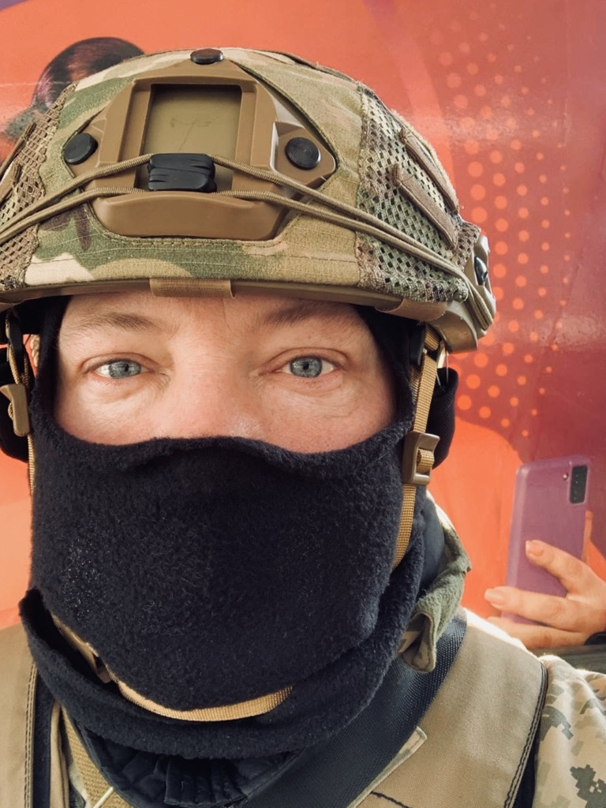

РЕЗЮМЕ

БІЛИЙ ОЛЕКСАНДР ОЛЕКСАНДРОВИЧ
(BILIY OLEKSANDR)
Дата народження: 12.03.1979
Моб. телефон:+38 (000) 000 00 00
Ціль: Заміщення вакантної посади юриста.
Освіта:
вересень 1995 р. – червень 1999 р., Національна академія внутрішніх справ м. Харків, факультет «Юриспруденція», спеціальність «Юрист», диплом бакалавра (денна форма навчання).
вересень 1999 р. – червень 2000 р., Національний економічний університет м. Київ, факультет «Юриспруденція», спеціальність «Юрист», диплом спеціаліста (заочна форма навчання).
Додаткова освіта:
червень 2006 р. — Тренінг «Ділове листування», «ТренінгЦентр», м. Миколаїв.
січень – квітень 2008 р. — Курси німецької мови, «Welcome to Germany», м. Миколаїв.
липень 2009 р. – Тренінг «Навички ділового етикету», м. Миколаїв.
Досвід роботи:
Юрист
травень 2015 р. – серпень 2017 р. агентство нерухомості «Еліт Хаус», м. Миколаїв.
Функціональні обов’язки:
— проведення операцій з нерухомістю та земельними ділянками;
— правова експертиза договорів;
— реєстрація юридичних осіб, внесення змін до статутних документів;
— правовий супровід угод;
— претензійно-позовна робота, представлення інтересів компанії в судах загальної юрисдикції, арбітражних судах;
— підготовка документації до проведення тендерів;
— керівництво відділом (5 чол.).
Професійні навички:
— володію комп’ютером (MS Office (Excel, Word); СПС «КонсультантПлюс» і «Гарант»; інтернет);
— знання законодавства України;
— навички ведення договірної роботи;
— уміння проводити переговори;
— навички ведення повного правого забезпечення діяльності організації;
— навички ведення претензійно-позовної роботи;
— досвід комплексного юридичного супроводу діяльності організації;
— досвід представлення інтересів клієнтів в різних інстанціях;
— навички складання різних юридичних документів;
— досвід колективної роботи;
— досвід роботи на керівних посадах
— досвід досудового вирішення конфліктів інтересів;
— знання мов: українська — рідна; російська – вільно володію; англійська – середній рівень.
Особисті якості:
Сімейний стан: не одружений.
Діти: так.
Водійське посвідчення: так.
Можливість відряджень: так.
Хобі: волейбол, теніс.
Соціальні мережі:

 На початок
Далі
На початок
Далі